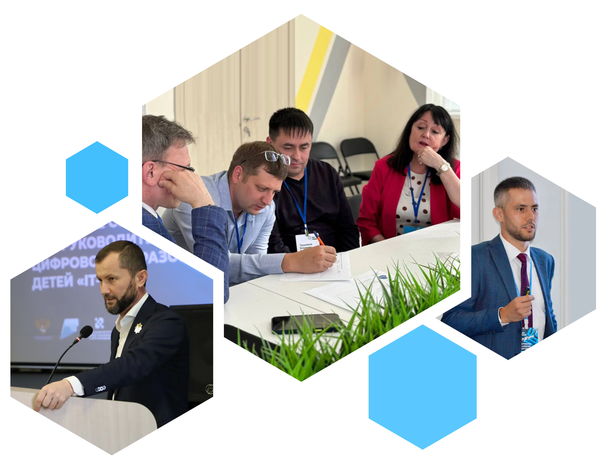

Центры цифрового образования

Место проведения
Приволжский федеральный округ
Южный федеральный округ
Северо-Кавказский федеральный округ
г. Грозный
21–22
мая
Сибирский федеральный округ
Уральский федеральный округ
Дальневосточный федеральный округ
14–15
июня
Прошедшие мероприятия
14-15
июня
ул. Мира, 76
г. Красноярск
21-22
мая
ГБНОУ Республиканский комплекс общего и дополнительного образования «Квант», здание Лицея
г. Грозный
30
марта
Центр «IT-куб» Школы № 619
г. Санкт-Петербург, Кондратьевский пр., д. 68, к. 3